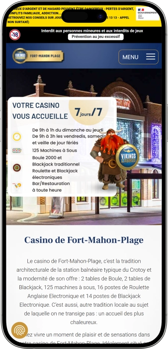

Offre de bienvenue exclusive de
Offre de bienvenue exclusive de
Casino de Fort‑Mahon‑Plage — jeux, jackpots, restaurant et animations
Top casinos
Détails du bonus
Casino
Bonus
Note
Tours gratuits
Plus d'infos
Obtenir
Avantages
-
Large choix de machines à sous modernes.
-
Roulette électronique : rythme rapide, mises claires.
-
Blackjack : stratégie, tension, ambiance de table.
-
Boule 2000 : tradition, suspense, parties vivantes.
-
Horaires pratiques, pour sorties tardives aussi.
-
Bar et encas disponibles toute la soirée.
-
Animations régulières, spectacles, soirées thématiques.
- Le Casino de Fort‑Mahon‑Plage séduit par une expérience complète : jeux, détente et divertissement au même endroit. On peut venir pour une session rapide ou pour une vraie soirée, entre bar, animations et sensations. L’ambiance balnéaire renforce le côté convivial et festif.
Casino de Fort‑Mahon‑Plage App


À propos Casino de Fort‑Mahon‑Plage
Le casino se distingue par des animations récurrentes et une offre de jeux très lisible. L’ensemble est pensé pour enchaîner jeux, bar et divertissement sans quitter le lieu.
- Jackpots : jusqu’à 28 000 €+.
- Gains annuels : 14 000 000 €+.
- Gros lots : 10 000 €+.
Le Casino de Fort‑Mahon‑Plage est une adresse de sortie où le jeu se mêle à une ambiance de bord de mer. On y choisit facilement son style, entre sessions électroniques rapides et tables plus traditionnelles.
Les espaces sont pensés pour accueillir aussi bien les curieux que les habitués. L’atmosphère privilégie la détente, avec une mise en scène lumineuse et une touche festive. On peut y passer pour quelques parties ou y rester toute la soirée. Les pauses sont simples grâce au bar et aux offres de restauration. Le programme d’animations renforce l’idée d’une vraie soirée, au-delà du jeu. L’établissement devient ainsi un lieu de divertissement complet, agréable à partager. Les conditions d’accès contribuent à préserver le confort et la convivialité. C’est une option idéale pour combiner émotions, loisirs et moments de détente.
Casino de Fort‑Mahon‑Plage : une soirée entre jeux et spectacles
Le Casino de Fort‑Mahon‑Plage se présente comme un casino balnéaire moderne, avec une ambiance à la fois élégante et décontractée. À l’intérieur, on retrouve généralement une mise en scène lumineuse, des espaces lisibles et une circulation simple entre jeux et zones de pause. L’atmosphère évoque la sortie du soir : on vient pour l’émotion, on reste pour l’expérience. La musique et les lumières accompagnent le rythme des parties, plus calme en journée et plus vivant le soir. L’ensemble convient autant aux débutants qu’aux joueurs réguliers.
Côté horaires, l’établissement est pensé pour accueillir à la fois les visiteurs de la journée et ceux qui aiment prolonger la soirée. Selon la période de l’année, les heures peuvent évoluer, mais l’idée reste la même : ouverture le matin et fermeture tardive, avec des amplitudes renforcées les soirs les plus fréquentés. Les jeux de table sont souvent plus présents en soirée, quand l’ambiance se densifie. Cela permet de construire une vraie soirée en plusieurs temps : dîner, jeux, puis divertissement. Le casino s’insère ainsi naturellement dans un programme de loisirs.
Le bar occupe une place centrale dans l’expérience, car il rythme les pauses entre deux sessions. C’est un point de rencontre idéal pour échanger, se détendre et relancer la soirée sans changer de lieu. Les boissons, cocktails et options de restauration légère évitent de couper l’élan du moment. Même une courte pause permet de revenir au jeu plus serein. Pour beaucoup, cette zone devient le cœur convivial du casino.
Concernant les hôtels, les visiteurs recherchent souvent un hébergement à proximité pour profiter pleinement d’une fermeture tardive. Le casino ne se présente pas comme un resort hôtelier, mais la destination offre généralement de nombreuses solutions autour : hôtels de charme, résidences, appartements. Cela facilite les week‑ends et les séjours courts. Le schéma “journée d’activités, soirée casino” fonctionne très bien. On obtient ainsi un séjour complet, sans contraintes.
Les événements et animations apportent un véritable supplément d’âme à la soirée. On y retrouve des soirées thématiques, des spectacles et des rendez‑vous qui donnent une raison supplémentaire de venir, même sans objectif de jeu long. Les jours d’animation, l’ambiance devient plus festive et le casino se transforme en lieu de sortie à part entière. Cela plaît particulièrement aux groupes et aux couples en quête d’une soirée différente. Le divertissement enrichit l’expérience au-delà des machines et des tables.
Enfin, les programmes de fidélité et les mécaniques d’avantages valorisent les joueurs réguliers. Le principe est simple : plus on joue, plus on cumule de points, et ces points se transforment en avantages concrets. Cette logique permet de rendre chaque visite plus intéressante, même avec un jeu modéré. La fidélité devient une manière d’optimiser ses sorties, entre cadeaux, remises et privilèges. Au final, le casino donne le sentiment de récompenser la constance et l’engagement de ses clients.
Personnel, paiements et gains : le fonctionnement au Casino de Fort‑Mahon‑Plage
Le personnel du Casino de Fort‑Mahon‑Plage suit en général les standards des casinos terrestres : accueil, discrétion et assistance, surtout pour les nouveaux joueurs. À l’entrée, l’équipe facilite le contrôle d’identité et rappelle les conditions d’accès, tandis qu’en salle elle aide à prendre en main les jeux électroniques et les règles de base. Sur les espaces de jeu, les employés veillent au confort, à la sécurité et au respect du règlement. Lors des pics de fréquentation, l’organisation vise à fluidifier le passage en caisse et l’accès aux postes de jeu. Cette présence renforce le sentiment de confiance et de tranquillité.
Concernant les langues, le français reste la référence pour l’accueil, la signalétique et les procédures. En période touristique, il est fréquent de trouver une aide en anglais “pratique”, suffisante pour expliquer des mises, des règles simples ou des questions de caisse. Pour des demandes plus techniques, la réception est le meilleur point de contact, car elle centralise les informations. Les échanges restent généralement simples : accès, paiements, fonctionnement des machines, et modalités de gains. L’objectif est de garder une expérience accessible et claire pour tous les profils.
La devise utilisée est l’euro, et l’ensemble des transactions internes est organisé autour de cette monnaie : caisse, bar, restauration. Les moyens de paiement les plus courants sont la carte bancaire et les espèces, selon la nature de la dépense et les usages du casino. La caisse sert souvent à convertir ou gérer les crédits de jeu, à régler certains services et à encaisser des tickets ou des justificatifs. Pour des raisons de conformité et de sécurité, des limites opérationnelles peuvent exister selon les montants. Il est donc recommandé d’anticiper si l’on prévoit une soirée avec un budget élevé.
Les retraits d’espèces sont généralement facilités par la présence d’un distributeur sur place ou à proximité immédiate, afin de ne pas interrompre la soirée. Le change de devises, au sens strict, n’est pas l’enjeu principal puisque tout se règle en euros ; il est souvent plus pratique de changer en amont via une banque ou un service spécialisé. Pour un visiteur, combiner une carte et un peu de liquide offre une bonne flexibilité. Il est aussi utile de distinguer le budget “jeux” du budget “bar/restaurant”, souvent traité en transactions séparées. Cette séparation aide à mieux contrôler ses dépenses.
Le paiement des gains se fait le plus souvent à la caisse, sur présentation du ticket, du crédit ou selon la procédure propre aux jeux de table. Pour les montants importants, une pièce d’identité peut être demandée et des vérifications internes peuvent s’ajouter, afin d’assurer la traçabilité. Selon les règles de l’établissement, différents modes de règlement peuvent être proposés dans le cadre autorisé. L’objectif est de garantir une opération fiable et transparente. Cela sécurise à la fois le joueur et le casino.
Sur la fiscalité, la lecture la plus courante pour un joueur “loisir” est simple : les gains au casino ne sont généralement pas assimilés à un revenu professionnel à déclarer comme tel. Il existe toutefois des cas particuliers, notamment si l’activité est considérée comme professionnelle ou si la situation juridique du joueur impose des démarches spécifiques. En cas de très gros gain et de situation complexe, un conseil spécialisé peut être utile. Dans la majorité des visites, l’expérience reste fluide : contrôle d’identité, encaissement conforme et respect du règlement. Cette simplicité fait partie du confort d’un casino terrestre bien organisé.
Règles de visite au Casino de Fort‑Mahon‑Plage : accès, tenue et trajet
La visite du Casino de Fort‑Mahon‑Plage repose sur un principe simple : l’accès aux salles de jeux est réservé aux majeurs et une pièce d’identité est indispensable. Cette règle protège les clients et garantit un cadre serein. À l’entrée, le personnel peut rappeler les conditions d’accès et l’exigence d’une tenue correcte. Le dress code n’est pas strictement “gala”, mais l’allure soignée compte pour préserver l’ambiance. Les tenues de plage ne correspondent pas à l’esprit d’une sortie au casino. Les personnes faisant l’objet d’une interdiction de jeu ne peuvent pas accéder aux salles, conformément au règlement. À l’intérieur, il est attendu un comportement calme et respectueux envers les autres joueurs. La photo/vidéo peut être encadrée pour des raisons de confidentialité, mieux vaut se renseigner sur place. En voiture, la présence d’un stationnement facilite l’organisation de la soirée. En période d’affluence, prévoir un peu de temps pour le contrôle d’accès améliore le confort. Enfin, fixer un budget et un rythme de jeu permet de profiter de la soirée dans de bonnes conditions.
Tenue / dress code :
- • Une tenue de ville soignée est recommandée ; l’important est d’être présentable.
- • Les tenues de plage (maillot, look “plage”) sont à éviter.
- • Les débardeurs et shorts très courts sont généralement déconseillés, surtout le soir.
Conditions d’accès :
- • Réservé aux 18+.
- • Pièce d’identité en cours de validité requise à l’entrée.
- • Accès interdit aux personnes officiellement interdites de jeux.
Interdits et restrictions :
- • Comportement agressif ou forte ivresse : refus d’accès possible.
- • Respect de la confidentialité : éviter de filmer les clients sans accord.
- • Respect des règles de caisse et d’utilisation des tickets/crédits.
Stationnement et accès :
- • Accès pratique en voiture avec stationnement à proximité.
- • Accès facile à pied depuis les zones de promenade, idéal pour une sortie du soir.
- • En dates très fréquentées, venir un peu plus tôt aide à se garer sereinement.
BiHappy au Casino de Fort‑Mahon‑Plage : guide complet du programme de fidélité
Le programme BiHappy au Casino de Fort‑Mahon‑Plage est conçu pour transformer la régularité de visite en avantages concrets. L’idée est simple : vous jouez à votre rythme, des points s’accumulent, puis vous les échangez contre des cadeaux ou des bénéfices. Pour le client, c’est pratique, car il n’y a pas besoin de multiplier les codes promotionnels : la carte suffit. Le programme ne récompense pas uniquement le jeu, il accompagne aussi la soirée via des avantages liés au bar et à la restauration. L’inscription est généralement rapide et s’intègre naturellement à une première visite. BiHappy permet souvent de recevoir des offres ciblées et des invitations sur des animations, ce qui enrichit l’expérience. Côté budget, c’est un vrai plus : une partie des dépenses “loisirs” peut être optimisée grâce aux récompenses. Même avec un jeu modéré, les points montent progressivement, et plus l’activité est régulière, plus les avantages deviennent visibles. Le système repose sur une “monnaie” de points, facile à comprendre et à utiliser. Il est aussi courant d’y trouver des tirages au sort réservés aux adhérents, qui ajoutent du suspense sans imposer de sur‑mise. Au final, BiHappy rend la visite plus avantageuse et plus agréable, tout en valorisant les joueurs fidèles.
Inscription (obtenir la carte)
- • Démarche à l’accueil, carte gratuite.
- • Pièce d’identité et majorité (18+) requises.
- • Carte nominative : 1 carte par personne pour un suivi correct des points.
Accumulation des points :
- • Mécanique de base : 10 € joués = 1 point.
- • Les points s’ajoutent lorsque la carte est utilisée sur les postes/lecteurs prévus.
- • Pour éviter toute perte, il est conseillé de vérifier régulièrement son compteur.
Niveaux
- • Start (0–999 pts) : offres de base et accès aux opérations simples.
- • Plus (1 000–9 999 pts) : offres plus personnalisées, avantages élargis.
- • VIP (10 000+ pts) : invitations prioritaires, privilèges renforcés.
Bonus BiHappy
- • Remise restaurant : on retrouve souvent –5% sur l’addition sur présentation de la carte.
- • Tickets/crédits de jeu : échange des points contre des tickets machines à sous (prolonger la session).
- • Consommations : conversion des points en café, verre de vin, coupe, etc.
- • Tombolas / tirages : possibilité de 1 ticket par jour pour certains tirages (mécanique “adhérent”).
- • Catalogue cadeaux : des récompenses du quotidien aux expériences majeures.
Optimisation :
- • Toujours utiliser la carte avant de jouer pour créditer les points.
- • Choisir une stratégie : “points pour jouer plus”, “points pour mieux dîner”, “points pour gros cadeau”.
- • Suivre les animations : les meilleures offres adhérents apparaissent souvent les soirs d’événements.
Fournisseurs de logiciels
Divertissement et jeux au Casino de Fort‑Mahon‑Plage
Bonus, offres et promotions au Casino de Fort‑Mahon‑Plage
En dehors de la fidélité, le Casino de Fort‑Mahon‑Plage anime régulièrement sa clientèle avec des promotions orientées jeux et sorties. L’attraction principale reste souvent le jackpot, qui crée un vrai objectif émotionnel et un supplément d’adrénaline. Même sans viser un montant maximal, l’idée qu’un gros lot peut tomber à tout moment rend les sessions plus intenses. Les opérations commerciales en salle de machines à sous sont aussi très appréciées : journées à thème, “happy hours”, tirages et cadeaux. Ces formats dynamisent la soirée et apportent un avantage supplémentaire sans exiger d’augmenter ses mises. Les offres liées aux événements renforcent la dimension “sortie” : on vient pour un spectacle, on reste pour le bar, puis on joue. Pendant les périodes festives, l’ambiance se transforme en rendez‑vous saisonnier, avec des programmes spéciaux et des surprises. La restauration s’intègre souvent dans ces offres, via des menus thématiques ou des formules avantageuses. On retrouve aussi des petites attentions marketing : coupons boisson, cadeaux d’accueil certains soirs, opérations “invitez un ami”. La régularité des animations permet de choisir le meilleur moment pour venir, plutôt que de jouer au hasard du calendrier. Cela transforme le casino en lieu de rendez‑vous, pas seulement en salle de jeu. Voici des exemples de formats fréquents avec des chiffres indicatifs.
Jackpots machines à sous:
- • Exemple d’ordre de grandeur: des jackpots peuvent dépasser 28 000 € sur certaines machines. Gain aléatoire selon la mécanique du jeu.
Tirages hebdo/mensuels:
- • Ticket de participation via une opération en salle, tirage en soirée.100–1 000 € en crédits de jeu, ou cadeaux/bon d’achat.
Tournois machines à sous:
- • Session à durée limitée, classement, lots pour les meilleurs scores. 200–2 000 € en crédits/lots selon l’événement.
Happy hours et périodes promo:
- • Tickets supplémentaires, cadeaux, avantages liés à l’horaire de visite. Avantage lié au timing, pas à la prise de risque.
Formules “spectacle + dîner”:
- • Billet + menu/formule + place réservée. 10–20 € d’économie par effet “pack”
Événements saisonniers:
- • Soirées festives, tirages spéciaux, menus dédiés, surprises. Du cadeau simple (boisson/dessert) à des lots plus importants selon l’opération.
Coffrets / cartes cadeaux:
- • Offrir une soirée (resto + divertissement + jeu). 25–100 € comme fourchette courante.
Jeux populaires au Casino de Fort‑Mahon‑Plage : guide pour débutants et habitués
L’offre de jeux du Casino de Fort‑Mahon‑Plage est pensée pour couvrir plusieurs styles : plaisir immédiat, stratégie et tradition. Les machines à sous dominent souvent, car elles sont simples d’accès et très variées en thèmes, bonus et rythmes. Les postes électroniques attirent ceux qui aiment les parties rapides et une prise en main facilitée. Les tables plus classiques apportent l’atmosphère “casino” avec ses codes, sa tension et son côté stratégique. La Boule 2000 plaît particulièrement à ceux qui recherchent une touche traditionnelle différente de la roulette standard. Le blackjack reste un incontournable pour les joueurs qui aiment décider, calculer et gérer leurs mises. Les versions électroniques (roulette et blackjack) réduisent la barrière d’entrée grâce à un écran qui guide les mises et les étapes. Cette diversité permet de construire une soirée progressive : commencer simple, puis monter en intensité. Beaucoup alternent jeu, pause au bar, puis retour sur une session courte, ce qui rend la sortie plus vivante. L’ensemble convient aussi bien à une découverte qu’à une habitude régulière. Voici un résumé des jeux phares.
- • Machines à sous : accès immédiat, univers variés, bonus, jackpots potentiels ; parfait pour tous les rythmes.
- • Roulette électronique : mises lisibles, tours rapides, confort d’utilisation grâce à l’interface.
- • Blackjack traditionnel : jeu de décision et de discipline, idéal pour les amateurs de stratégie.
- • Blackjack électronique : format rapide, règles guidées, pression réduite par rapport à la table.
- • Boule 2000 : parties courtes, tradition locale, sensations différentes de la roulette classique.
Mises au Casino de Fort‑Mahon‑Plage : minimums et maximums par jeu
Connaître les fourchettes de mises aide à jouer sereinement et à maîtriser son budget au Casino de Fort‑Mahon‑Plage. Les mises minimales permettent de découvrir un jeu sans pression, tandis que les plafonds intéressent ceux qui aiment les enjeux plus élevés. Dans un casino terrestre, les maximums peuvent varier selon la table, le poste électronique ou la configuration de la machine. Le tableau ci‑dessous sert de repère pratique pour préparer sa soirée.
| Jeu | Mise minimale | Mise maximale |
|---|---|---|
| Machines à sous | 0,01 € | 5–10 € |
| Roulette électronique | 0,50 € | 100 € |
| Blackjack traditionnel | 2 € | 200 € |
| Blackjack électronique | 0,50–1 € | 50–100 € |
| Boule 2000 | 1–2 € | 200 € |
Animations, spectacles et loisirs au Casino de Fort‑Mahon‑Plage : la vie du soir
Le Casino de Fort‑Mahon‑Plage ne se limite pas aux salles de jeux : c’est aussi un lieu de sortie animé par un calendrier régulier d’événements. L’un des points forts est l’effet “rendez‑vous”, avec des soirées thématiques, des spectacles et des formats de week‑end qui donnent envie de revenir. Les soirs d’animation, l’énergie change : plus de monde, plus de rythme, une ambiance plus festive. Cela convient parfaitement à ceux qui souhaitent une soirée complète, pas seulement une session de jeu.
Les formats récurrents créent souvent une atmosphère “club” sans forcément être un club de nuit au sens strict. On peut y retrouver des soirées musicales, des animations avec animateur, des moments festifs, voire du karaoké, où l’espace bar devient central. Pour un groupe d’amis, c’est une “soirée avec option casino” : on discute, on boit un verre, on participe à l’animation, puis on joue. Cette souplesse rend la sortie plus vivante qu’un simple enchaînement de parties.
Les périodes saisonnières et les fêtes renforcent encore l’intérêt, avec des programmes plus marqués et parfois des offres spéciales. Vacances, week‑ends et dates festives s’accompagnent souvent d’une ambiance renforcée, de jeux‑concours et de tirages. On obtient alors une soirée “événement”, même sur un temps court. Les habitués aiment ces moments car ils permettent de planifier la visite autour des meilleures dates.
Enfin, ce sont ces animations qui transforment le casino en lieu de divertissement global. On peut venir pour le scénario complet : bar, spectacle, session de jeu, puis retour à l’ambiance musicale. Ce format plaît aux couples et aux groupes qui recherchent variété et convivialité. Le jeu devient une partie d’un ensemble plus large, centré sur l’expérience du soir.
Tous les divertissements
- • Soirées thématiques : ambiance scénarisée, animations, moments conviviaux.
- • Concerts et spectacles : musique live et formats scéniques pour une vraie sortie.
- • Karaoké : participation, fun et esprit de groupe.
- • Événements culturels : formats plus calmes, expositions ou rendez‑vous ponctuels.
- • Opérations en salle de jeux : tirages, tournois, journées promotionnelles.
- • Soirées bar “night out” : cocktails, musique et rythme de soirée.
Bar, restaurant et détente au Casino de Fort‑Mahon‑Plage : organiser la soirée parfaite
La détente au Casino de Fort‑Mahon‑Plage se construit souvent autour d’un rythme simple : jouer, faire une pause, profiter d’un moment gourmand, puis revenir aux jeux ou aux animations. Le bar permet de rester dans l’ambiance sans chercher une autre adresse, ce qui est précieux le soir. On peut démarrer avec un verre, passer aux machines ou aux tables, puis revenir se poser quelques minutes. Les cocktails et encas rendent les pauses courtes et confortables, tout en gardant un esprit de sortie.
Le restaurant apporte une dimension “soirée complète”, au‑delà de la session de jeu. Beaucoup de clients aiment dîner d’abord, puis jouer ensuite, avant de terminer au bar. Cette organisation aide aussi à mieux gérer le budget, en séparant les dépenses de restauration des mises. L’expérience ressemble alors à un vrai moment de loisirs : on prend le temps, on discute, on alterne. C’est particulièrement agréable en couple ou entre amis.
Pour l’hébergement, on trouve généralement des solutions à proximité afin d’éviter un retour contraignant après une fermeture tardive. Le casino n’est pas nécessairement intégré à un grand hôtel, mais l’environnement de station offre des options variées autour. Cela convient aux week‑ends, aux séjours romantiques et aux pauses courtes. Le combo “journée de promenade, soirée casino” devient naturel. On obtient ainsi un séjour complet et fluide.
Enfin, la détente passe aussi par l’atmosphère : s’asseoir, échanger, respirer, puis replonger dans l’action. Pour ceux qui ne veulent pas jouer en continu, bar et restaurant deviennent le fil conducteur, et le jeu une option plaisante. Cette balance rend la sortie accessible même aux joueurs modérés. Au final, le Casino de Fort‑Mahon‑Plage s’adapte à plusieurs styles de soirée, du passage rapide à la sortie prolongée.
Tous les espaces de détente
- • Bar du casino : cocktails, boissons, pauses entre les parties, ambiance du soir.
- • Restaurant Le Passe‑Pierre : dîner ou encas tardif, parfait avant/après le jeu.
- • Espaces de pause : moments pour souffler, discuter, planifier la suite.
- • Hébergements à proximité : hôtels et appartements autour pour finir la soirée sereinement.
FAQ
Sans document valide, l’entrée en salle de jeux est généralement refusée. Mieux vaut revenir avec la pièce pour profiter sereinement.
En général non, vous restez pendant les horaires d’ouverture. En cas d’affluence, l’accès à certaines zones peut être régulé.
Séparez budget “jeux” et budget “sortie”, fixez une limite, faites des pauses. Cela rend la soirée plus agréable et plus maîtrisée.
Commencez par les machines à sous à petite mise ou la roulette électronique, guidée par l’écran. Ensuite, vous pouvez tester des jeux plus stratégiques.
Adressez‑vous immédiatement au personnel de salle ou à la caisse, calmement. Des procédures existent pour vérifier et expliquer.